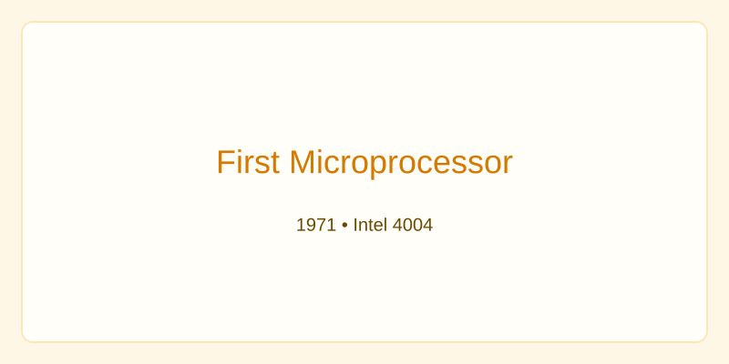
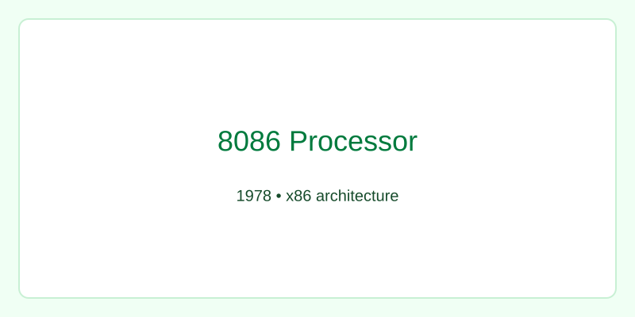
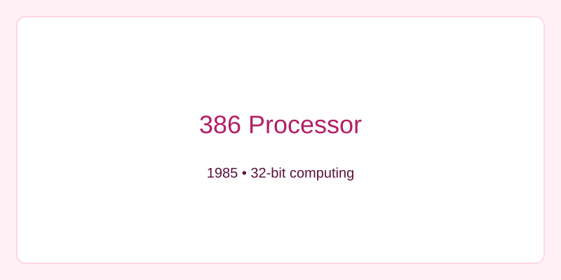

1968
Intel Founded
Robert Noyce and Gordon Moore founded Intel, starting a legacy of innovation.
Early leadership established a culture of engineering excellence and long-term thinking.
Explore Intel's journey and major sustainability milestones.
Robert Noyce and Gordon Moore founded Intel, starting a legacy of innovation.
Early leadership established a culture of engineering excellence and long-term thinking.

The 4004 launched the microprocessor era and enabled modern computing devices.
This innovation made smaller, smarter electronics possible across the world.

Introduced the x86 architecture that powers many modern systems.
Architecture choices here influenced decades of PC and server design.

32-bit performance expanded computing possibilities for consumers and businesses.
This helped accelerate software innovation and multi-tasking capabilities.
Intel recorded its highest operational GHG emissions and then invested to improve.
Following years focused on renewable energy, efficiency, and chemical abatement.
Intel introduced its RISE goals to guide sustainability through 2030.
The strategy focuses on climate action, water, and inclusive governance.
Commitment to net-zero Scope 1 and 2 emissions across global operations by 2040.
Long-term investments and partnerships support this goal.
Intel achieved near-universal renewable electricity usage across its sites.
This helped reduce carbon footprint and support clean energy markets.
A summit to align partners and industry on sustainable semiconductor manufacturing.
Collaboration across supply chains is essential to scale impact.
Scroll horizontally on wide screens. Hover or tap a card to learn more.